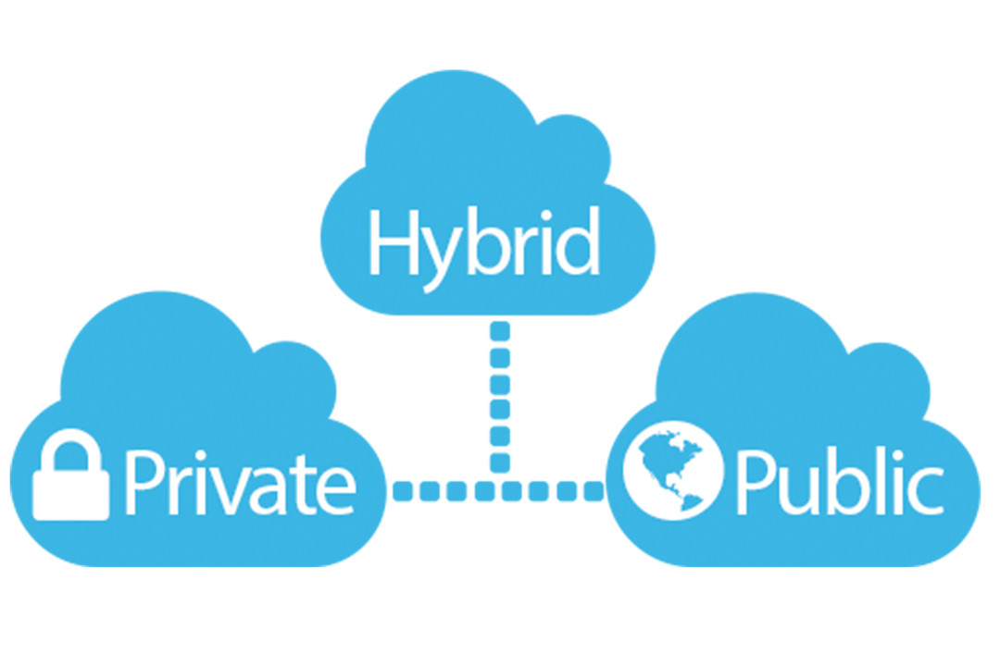

Cloud computing · Distributed simulation
Monte Carlo simulation,
beyond one cloud.
A configurable hybrid-cloud application for running compute-intensive simulations across GCP and AWS, with visibility into the resources and cost behind each run.

01 / The problem
Make computation a choice.
Monte Carlo simulations can demand very different amounts of computation. This project explored how an application could let the user choose an appropriate execution model rather than forcing every workload through the same infrastructure.
The system needed to coordinate work across two cloud providers while preserving a simple interface for submitting configurations and retrieving results.
02 / The architecture
One interface. Distributed execution.
A Flask application hosted on Google App Engine exposed REST endpoints for simulation configuration and execution. Requests could route computation to AWS Lambda for a serverless workflow or to Spark on Amazon EMR for distributed processing.
CockroachDB persisted user configurations and execution logs. The AWS API also made it possible to capture resource usage and cost information associated with a simulation.
03 / What I took away
Architecture is about trade-offs.
The project brought together API design, distributed computation, persistence, and cloud cost awareness. It reinforced an enduring engineering lesson: the right design makes trade-offs explicit and gives users control where it matters.